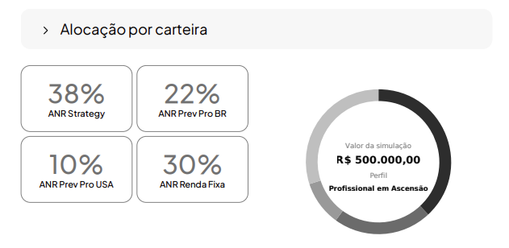
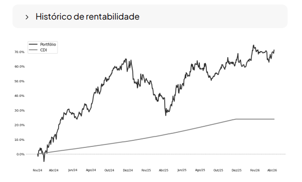

Cada proposta montada à mão é tempo tirado do cliente. O Life Invest enquadra o perfil, consulta o mercado secundário em tempo real e alinha com as teses ativas da Research. O resultado chega no WhatsApp do cliente em menos de 5 minutos: PDF institucional com plano de alocação, 50.000 simulações Monte Carlo e três cenários. A execução vai direto para o multibanco. O consultor fica com o que importa — o relacionamento.
O representante descreve o cliente em um áudio de 60 segundos: perfil de risco, objetivos de vida, patrimônio declarado, horizonte. Nenhuma planilha. Nenhum formulário.
Life Invest enquadra no perfil proprietário Anova, consulta o mercado secundário em tempo real e alinha com as teses ativas da Research — metodologia que antecipou Argentina 2023, Chile e Colômbia 2025, dólar e Selic 2025.
Para cada perfil testamos dezenas de milhares de cenários de mercado antes de sugerir a alocação. Volatilidade histórica calculada, três cenários construídos — pessimista, médio e otimista.
O PDF institucional chega ao WhatsApp do cliente. Aprovado, o consultor executa via multibanco. Carteiras de renda variável passam a rodar automatizadas seguindo as teses da Research.
Planilha. Pesquisa de mercado. Formatação. PDF manual. Horas que deveriam estar com o cliente iam para dentro de um arquivo — e se o cliente não aprovasse, começava do zero. O Life Invest nasceu dentro desse problema. A proposta que era artesanato passa a ser sistema.


O Life Invest não decide alocação sozinho. Cada proposta é calibrada pelas teses ativas da Research — metodologia preditiva construída desde 2020 por Paulo Martins e Pedro Pivotto. A mesma análise que antecipou Argentina 2023, Chile e Colômbia 2025, dólar e Selic 2025. O consultor entrega uma proposta fundamentada. O cliente recebe o mesmo fundamento que move R$ 2Bi sob operação.
Áudio de entrada. PDF de saída. Cinco minutos. A gente mostra ao vivo com um caso real — enquadramento de perfil, tese da Research, 50.000 simulações, execução via multibanco. Do áudio ao PDF, sem corte.